前言
建國百年即將揮別，有道是人生難得有幾回，偷得浮生半日閒，在一個沁涼的午後，河東獅隊長「小獅」吆喝下，年終最後半天工作日，放空自己迎接新的來年！於是大夥各自按約定時間會合，展開一趟離塵不離城，悠然柴山騎乘，聽說那兒有個海洋天堂（escape41），這名字取得恰洽好，就是暫時逃離現實工作，來到天堂fun輕鬆！喔，還有幾位生力軍及貴賓呢，待我一一介紹。
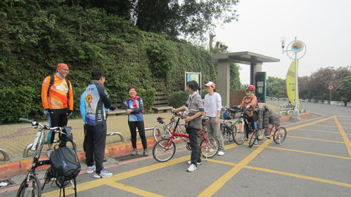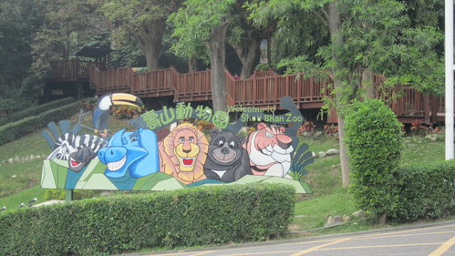
這是我們社團柴山之行中繼站---高雄市立動物園，社長超哥正在經驗分享，大家聽得津津有味。
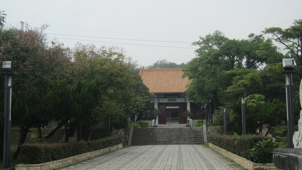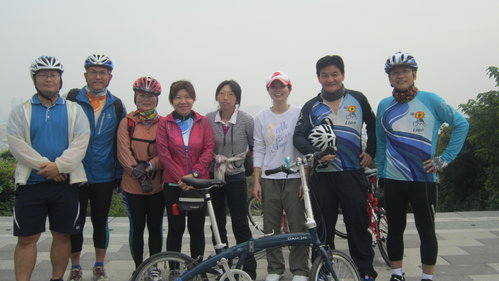
河東獅自行車社新學員入社儀式，選擇在肅穆莊嚴的忠烈祠，背景卻是海闊天空的高雄港美景，這是入伍禮，騎到這裡也需要些許體力，也代表體能訓練成長的開始。
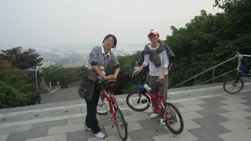
是滴！（背景音樂：鐵獅玉玲瓏）尹是可愛的女紅妝，生作是嬌小但腳力勇，噹拉噹噹噹；噹拉噹噹噹，踏丟七段的小折疊車，上山下海嘛麥輸老先拜。
是的，這二位就是初試啼聲河東獅新學員阿芳及阿瑛，別小看人家裝備不齊、服裝不標準，腳程可不輸人呢！
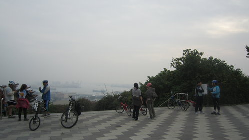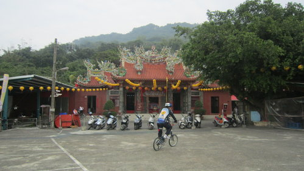
柴山的騎乘路線我們最熟悉不過了，如果動物園是中繼站，那麼這山海宮廣場就是我們的集合地，在這裡可以休息喝口水、交換心得，互換愛駒騎乘，到自行車店買車是無法試騎的，但在這裡社團裡面的成員各種款式車種都可以讓你上車親自感受，喜歡了再去買。哦，海風一吹差點忘記，這裡不是可我們的終點站，各位出發了！
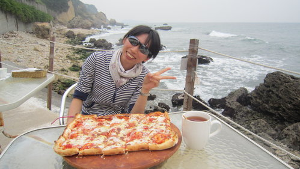
從山海宮旁沿著彎曲陡斜狹窄的街道，上上下下起伏終於來到期待的「柴山海洋天堂」餐廳，入口做得很特別，若想牽車進去的話，必須彎腰、低頭，步步為營，我想這可能是以前碉堡營舍的遺址，但是進入大廳後就別有洞天了，聽說主廚獨門招牌"四層起司披薩"就是這個啦，看我的笑容就知道很滿足吧！
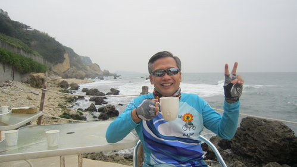
鍾二哥說（二審來的大哥）：認識你們河東獅車隊真好，從此我的人生由黑白變成彩色的啦！YA
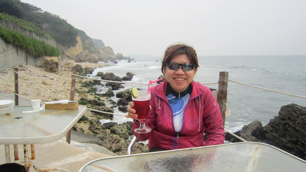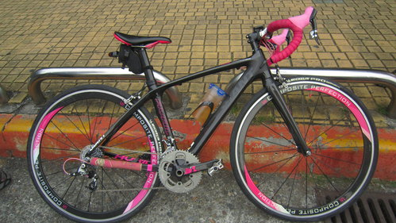
我是南征北討又回鍋，說來話長，有空出去騎乘我再解釋，右邊是我的座騎，桃紅色系列，加上暗紅色四季水果茶，You can call me Pink-lady.
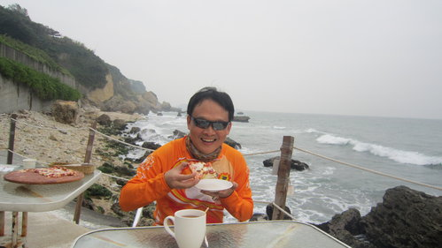
如此接近大自然，貼近海邊，微風徐徐，聽浪花聲、大餤皮薩，享受下午茶，豈不快哉！
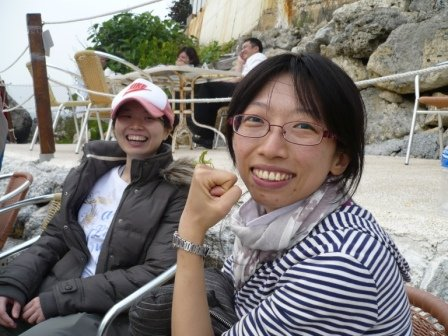
我們是新來的，也是樓上那個人威脅我.....不不不....是叫我們來的，很高興能跟大家上山、下海來看海，我拳頭上的是什麼你猜猜看？。
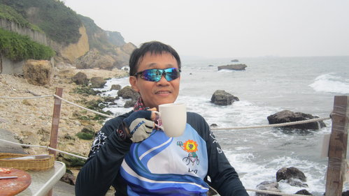
不曉得我太太、女兒、兒子現在在喝什麼？
俊哥：別想太多，他們喝得比你好啦！
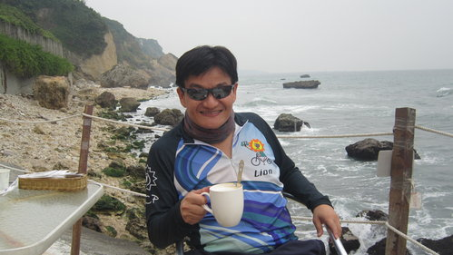
如此美麗的地方，我在中山大學讀書四年常在後方海域裸泳，竟然都不曉得。
不過，我這張照片拍得帥吧！（拿這張去推翻院長的基因論）
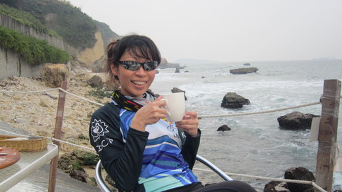
喔！真是聰敏、慧詰、果斷、活潑........ 你麥哥講阿，人會歹勢呢。
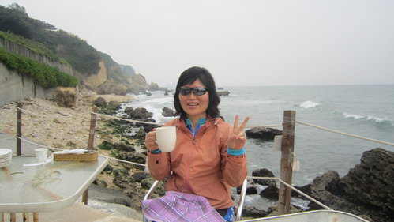
我叫「小文」，在會計室管帳的，二個孩子的媽，看我的手指就不會弄錯了，也曾經在河東獅自行車部落格發表過幾篇文章，歡迎大家點閱欣賞。
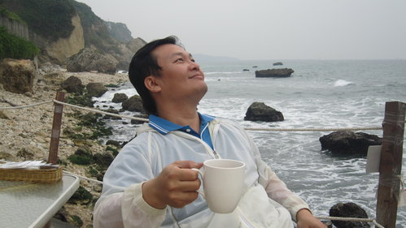
徵婚啟事：
我姓黃，綽號員外。來自純樸茄萣漁村，除了愛騎乘自行車外，別無其他不良嗜好，外表不重要，年齡不是問題，身高不是距離，身材不是壓力，貴在心靈交會能攜手共度一生。意者請洽下列網址
www.543@阿沙布魯.com.tw
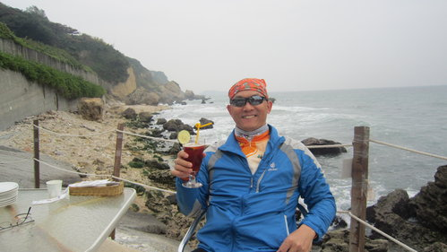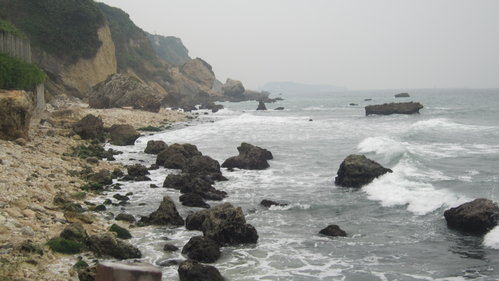
我本不上相，沒想到一副墨鏡完全掩飾我的瑕疵，謝謝鍾二哥慷慨相借。
第一次貼著大海那麼近，坐在海岸邊啜飲英式下午茶，如果遠方渺小模糊的船隻之於高雄港是過客，那我們之於海洋天堂餐廳也不就是旅人而已，悠然時光雖短暫，但美好的記憶真的令我久久難忘。
阿祥 筆